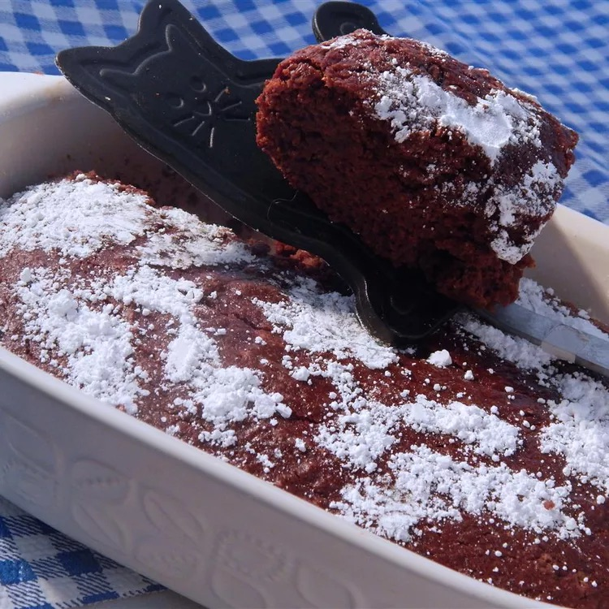

Brownies
Home

Healthy Brownies
These brownies are rich, fudgy, and perfect for any chocolate lover. Follow this simple recipe to make your own batch of delicious brownies at home!
Ingredients:
- cooking spray
- 1 1/2 cups white sugar
- 1 cup whole wheat flour
- 1 cup cocoa powder
- 1 1/2 teaspoons baking powder
- 1/8 teaspoon salt
- 1 cup plain nonfat Greek yogurt
- 1/2 cup brewed coffee
- 1/2 cup applesauce
- 2 teaspoons vanilla extract
Steps
- Preheat oven to 350°F (175°C). Spray an 8-inch square baking pan.
- Mix sugar, flour, cocoa powder, baking powder, and salt together in a large bowl. Push mixture to the sides of the bowl to form a well in the center.
- Combine yogurt, coffee, applesauce, and vanilla extract in a small bowl. Pour yogurt mixture into the flour mixture. Fold gently with a spatula until just combined. Spread in the prepared pan.
- Bake in the preheated oven until center is firm to the touch, 45 to 55 minutes. Cool slightly before cuttin ginto squares, about 15 minutes.
Cook's Notes:
You can subistitue water for the brewed coffee
If you use regular plain yogurt, omit the coffee/water. The brownies will have a cakier texture.